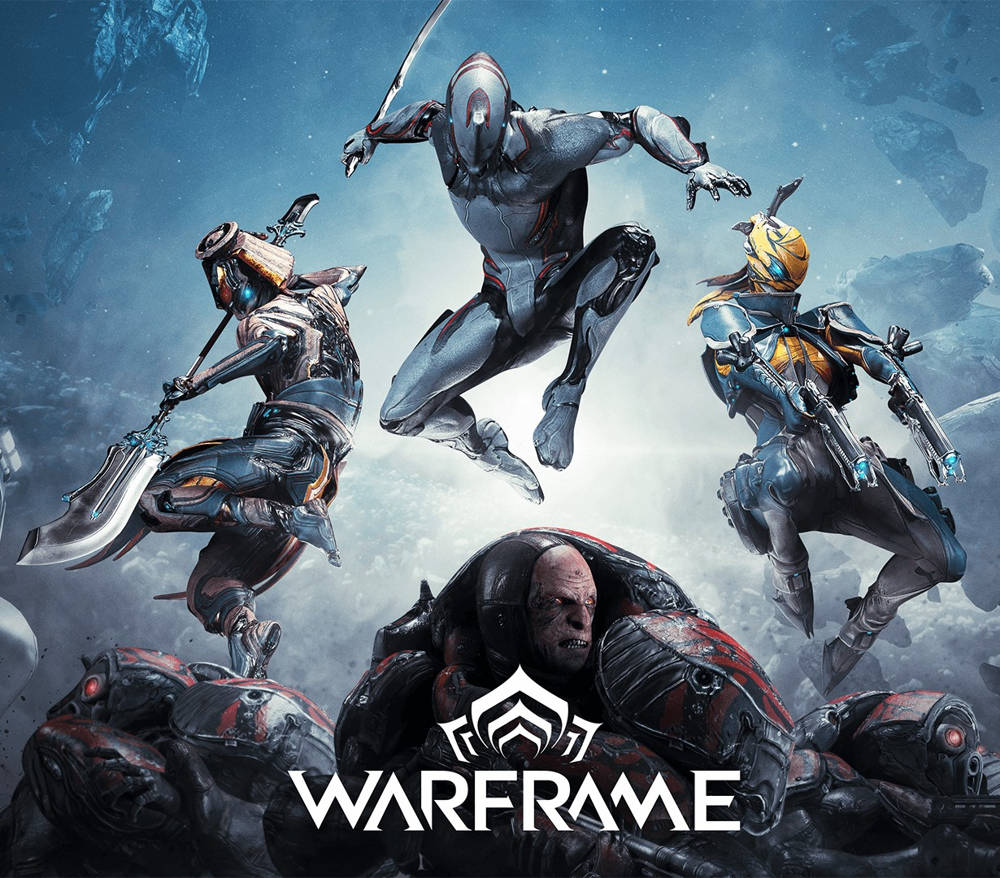
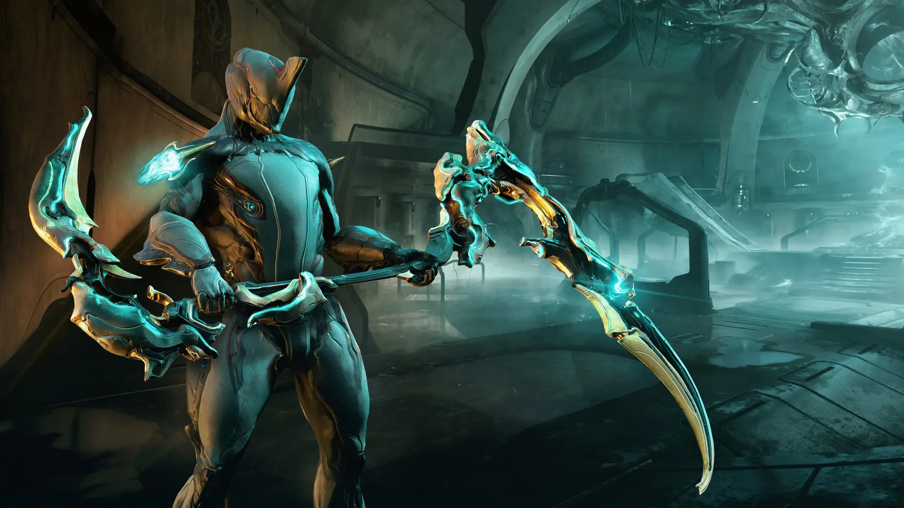
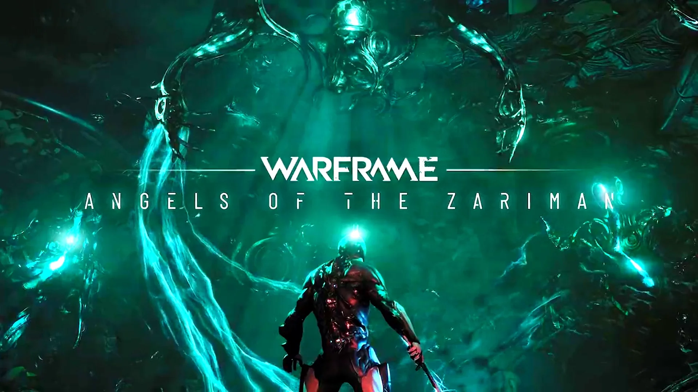

Quick tutorials
Warframe is a fantastic free to play game that has a lot of depth to it, however that depth tends to scare away a lot of new players. This video will talk you through what is a Warframe? What beginner warframe should you pick? It'll teach you how to build new weapons, how to farm resources, how to progress the story, what beginner gear you should build, how to spend credits. It'll explain the basics of the market, foundry, and mod system and more. Please also understand this video is not meant to be super in-depth, rather an introduction to help new players get into Warframe.

Things to do early on:
Spend Starting Plat on Weapon/Warframe Slots.
Redeem promo codes OLDFRIEND and FREESWORD for some free stuff.
Redeem the free booster from humble bundle.
Focus on clearing the star chart and junctions.
Level everything you get to 30 once for the mastery XP, then sell if you don't like it. Mastery Rank is required for good weapons later on.
Mods > Item level, MODS make the weapon, not the level. Level just lets you add more MODS.
Join a Clan to access Clan Tech Weapons/Warframes.
Watch iFlynn's Warframe Beginner's Guide
Read the players handbook.
The Star Chart is the interface used to access missions through the "Navigation" segment in the Orbiter. It shows the celestial bodies of the Solar System (also referred to as the Origin System). Each celestial body (also referred to as "planet") has its own set of resources and a backstory regarding the faction that is controlling the planet (accessed through Cephalon Fragments). Some planets may feature more than one faction at the same time.
Full tutorial
The best guide I could find for new players.
The Hespar is a new melee weapon that you can check out when you type “the Heavy Scythe” into the game. If you're interested in the blueprint, you can get it from the new bounty on the Zariman. The Hespar weapon comes as a rank 12 melee weapon whose primary function is to deal slash damage, and on the side, it also deals puncture damage to enemies. It moves quickly, covers an adequate gap in combat, and has a good grip and a good status.Its stance is known as the gale-force dawn and has three combos: a button mash, a forward button mash, and a forward block combo. Apart from looking cool, these combos actually deal a lot of damage to enemies around you. You can make a build for the weapon as you choose, but we recommend the zero forma method. The weapon's performance varies on your build, but all combos should be good regardless.
From depths beyond reason a Voice had spoken, and its echoes would not be denied. No longer fully concealed by the ever-shifting Void, the Zariman now rests between worlds. A haunting song resounds across the System. It is time for an overdue confrontation with the past...